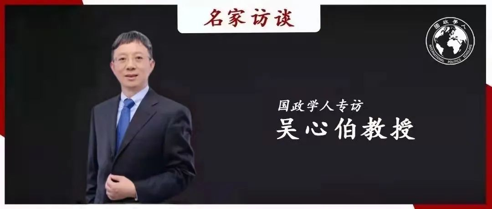
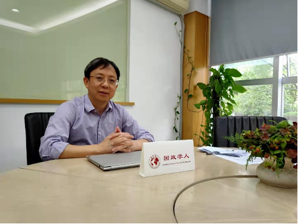
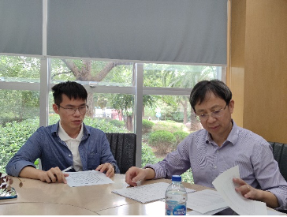

收录于合集 #名家访谈 6个


编者按
国政学人新一期“名家访谈”重磅发布：国政学人专访吴心伯教授。 吴心伯教授是中国美国问题研究和中美关系研究的领军人物之一，也是深度参与中美国际交流，为国家政策咨询提供智力支持的“学者外交家”。历史学的学术背景为吴心伯教授的研究打上了怎样的烙印？中国和西方国际关系研究呈现出哪些差异？美国社会和中美关系正在经历着怎样的变化？青年学者在学术道路上又要注意在哪些问题上“避雷”？吴心伯教授围绕学术经历、学科评论、美国研究和青年寄语等四个话题向我们分享了他的感悟、观点和期许。在此，由衷感谢吴心伯教授对国政学人的支持！
“国政学人·名家专访”第六期
国政学人专访吴心伯教授
吴心伯
嘉宾：
吴心伯： 复旦大学特聘教授，国际问题研究院院长，教育部人文社科重点研究基地复旦大学美国研究中心主任， 复旦发展研究院副院长，外交部第四届外交政策咨询委员会委员，习近平外交思想研究中心特约专家，中国亚洲太平洋学会副会长，中华美国学会副会长，上海市国际关系学会副会长，上海美国学会会长，上海市美国问题研究所所长。担任《美国研究》、《国际展望》、《亚太安全与海洋研究》以及美国《华盛顿季刊》（The Washington Quarterly）、英国《欧洲国际安全杂志》(European Journal of International Security)等学术刊物编委，英国《国际事务》（International Affairs）国际顾问，主编《美国问题研究》和“21世纪的美国与世界”丛书。曾任世界经济论坛“地缘政治风险”理事会副主席（2012-2013）、主席（2013-2014），现任美国亚洲协会政策研究所理事，三边委员会会员，亚太安全合作理事会（CSCAP）中国委员会委员。
采访：
卫艺璇： 国政学人特约记者，复旦大学国际关系与公共事务学院2020级博士生；
吴虚怀： 复旦大学国际关系与公共事务学院2019级博士生。

第一部分 学术历程
国政学人： 吴老师您好，非常感谢您接受国政学人平台的专访！首先我们想围绕您个人的学术历程来聊一聊。我们注意到您最早是学历史学出身，之后才转型做国际问题研究。请问老师您认为历史学的学术背景及相关学术训练对您日后从事国际问题研究带来了哪些帮助？又给您的研究打上了什么样的烙印？
**** 吴心伯教授：
谢谢提问！首先，我认为历史学的出身和背景对我的研究兴趣和研究偏好的影响还是很明显的。比如我在国际问题研究中特别注重对事实的充分和准确把握，特别是关注事件的全貌和细节，然后在研究的时候凭证据说话，持之有据。另外就是非常重视因果关系的判断。平时看问题也比较有历史感，关注事件的来龙去脉，不会就事论事，浮于表面。所以，
历史的学术背景给我的研究带来的最明显的特点就是偏实证研究，也就是说注重对国际关系中的问题本身的研究，从问题出发来发现真相、探索规律，而非依靠理论演绎。
比如我关注的两个重点研究领域——美国亚太政策和中美关系。我对美国亚太政策的研究就很重视美国亚太政策本身的逻辑、政策变化的动因、演变规律、演变轨迹以及演变带来的影响，这都是一些比较“实”的问题。对中美关系的研究也是如此，我重点关注不同时期中美关系内涵的变化、中美互动模式的变化以及中美互动过程的演变，等等。
如果说历史学背景给我带来一些不足，那可能在于在实证研究基础上不太注重理论框架的构建。我觉得我的研究不是要解决理论构建问题的，而是揭示真相、发现规律就可以了。
国政学人： 我们注意到老师您参加工作后就广泛地参与国际学术交流和对话，1994年赴美国乔治·华盛顿大学做访问学者可以说是首次经历。此后，您也曾于美国斯坦福大学、布鲁金斯学会、和平研究所、法国巴黎政治学院等多家学术机构任研究员或访问教授，也曾数十次赴美国、日本、新加坡、韩国、德国、法国、英国、澳大利亚等国访问、参加学术会议或进行讲学，还曾担任过“达沃斯论坛”的发言嘉宾，可以说有着丰富的参与国际交往的经历。请问老师这种参与国际学术对话与交往的能力应该如何培养？您认为参加国际学术对话对自身发展起到了什么作用？
吴心伯教授： 参与国际交流和对话需要几方面的能力。 首先是表达能力。
表达能力既包括外语能力，也包括表达的技巧、话语逻辑（不同文化中话语逻辑是不一样的）。 第二是要把握国际对话的规则，
这不仅包含明确写出来的规则，也包括一些潜在规则。 第三是足够的知识储备，
在不同的场合、面对不同的对象，你只有与对方的知识体系能够对接才能更好地把对话进行下去。
那么要如何培养这些能力呢？从我个人经历来说无非是以下几个方面。
首先是要注意观察、了解，观察国际场合对话的方式、特征和规则。接下来就是要学习和模仿，积极参与进去。第三就是要锻炼和提高自己。大概是这样的三个阶段。
总的来讲同国外政策界、学术界的交流和对话对我的帮助还是很大的。其一是我能够参与很多国际知名学者的研究项目，扩大了学术交往范围，拓展了我的知识面，提高了我的研究能力，促进了我学术上的进步。其二是也督促我更多地进行英文的写作和发表，用英文来呈现自己的研究成果。
国政学人： 说到英文写作和发表，吴老师，您是中国国关学者中英文发表最多的学者之一，能不能请您以亲身经历谈一下您是如何开始英文写作的？有哪些心得与我们分享？
吴心伯教授： 我第一次英文写作的经历是1994年第一次到美国做访问学者，当时写了一篇论文，我的指导老师哈里·哈丁教授看了文章之后建议我在美国发表，结果真的发表了。这对我是很大的鼓励。给我印象最深的例子应该是1995-1997年间我参加了美国东西方中心一个有关亚太安全问题的研究项目，后来这个项目还出版了一本书《亚洲安全实践》，由斯坦福大学出版社出版，我负责其中的一章。那个项目当时找了亚太地区的一批青年学者，每人写一章，然后也请了这个领域的一批资深学者来对我们的文章进行点评。当时我们先写好论文，然后在夏威夷开了第一次会议，为期一周。每个人结合自己的论文发言后由两位资深学者对我们的文章进行点评，之后是开放讨论和问答环节。这次会议结束后我们有半年的时间进行修改。之后在新加坡召开了第二次会议，依然是每个作者发言，然后两位专家点评，大家讨论。会议结束后又是半年的时间修改，随后文章被提交给项目的主持人。主持人又会再看一遍我们的论文，提出意见供我们进行修改。三次修改之后我们的文稿被汇总送到斯坦福大学出版社，出版社那边又邀请两位专家对整个书稿进行评审，我们再进行修改。这次修改提交给出版社后，文章进入编辑程序，编辑又会给你反馈意见，其中既包括技术性问题也包括学术性问题，我们再进行修改。所以你看一篇论文经历了多少次打磨。那是我第一次真正深度地参与国际的学术交流。这次项目给我的训练差不多相当于读一个学位，给我的帮助非常大，让我知道了英文的学术文章怎么写，会怎么开，出版、发表的程序是什么，学术共同体是怎么互动的，有哪些或明或暗的规则等等。这些知识和经验是课堂上学不到的，也不是坐在办公室研究能获得的，就是在学术共同体互动的过程中得到的收获。
那么如何培养英文写作能力呢？在我看来， 首先就是要去仔细阅读、钻研、解剖好的英文文章。 当时我去做访问学者的时候，指导老师给我开了一个书单。其中有一些文章非常好，于是我就反复看，反复琢磨。 第二，直接用英文写作。 我观察有一些同学或者青年研究人员选择先用中文写作再进行翻译，我认为这样效果很不好，因为直接用英文写作能促使自己尽早进入英文写作的状态，去习惯这一过程，从而获得较快的进步； 第三，尽可能地在英文的语境中学习写作， 比如如果你正在英语国家访问学习，耳濡目染之下就比较容易进入写作状态。
国政学人： 我们注意到老师您的研究有很强的政策关怀，比如承担政府部门下达的研究课题，率专家小组赴国外进行政策调研和政策宣讲，提交高质量的决策咨询报告。请问您是如何开始进行政策研究的？更进一步地讲，进行政策研究需要什么样的能力？
吴心伯教授： 我对政策研究产生兴趣可能也与我的历史学背景有关。 首先，刚刚我们谈到，历史学背景注重研究问题而非研究理论。
所以在研究国际问题的时候你首先会产生好奇，比如（抛开书本）真实的外交和国际关系到底是怎么回事？我94年第一次去美国做访问学者恰巧就在华盛顿，那是美国的政策中心。你每天去国会、去智库都会有大量的政策讨论，有很多官员包括前政要都会讲政策制定的过程。这就满足了你的好奇心，你明白，噢，原来政策制定是这么回事！这与我们在书本上、报纸上看到的是很不一样的。
第二，也是为了在研究中获取素材的需要。
因为有很多研究其实你对事实把握的并不充分，或者说报纸上的报道也并不准确，甚至是被歪曲的。所以这就需要你从政策圈去获得第一手的，比较insightful的资料，这也能为你提供不同的研究视角。因为理论可能没办法告诉你从哪个角度分析问题比较得当。
第三，中国人多少都讲究“经世致用”，你做学问也是为了解决实际问题。
不管理科、医科还是文科都是如此。国际关系实际上应该是实用性很强的学科，应该是能与国际政治的实践结合起来，指导实践、解决实践中的问题的。这样的研究可能才是有价值、有生命力的。
政策研究对我起到了很大的帮助。首先就是我了解到了真实的政策制定和外交实践过程，这和我们在书本上读到的是很不一样的。另外就是在这个过程中能对一些学术层面的理论、结论和假设进行验证。如果论证理论的过程只是从学术到学术，那么其实只是一个自我循环，你必须把政策拿过来，验证是不是这一回事。我们就发现有些理论从政策层面来说只是部分成立，或者说要取决于具体的国家和情况，比如适用于美国的外交和决策过程理论可能就不适用于中国。
关于从事政策研究所需要的能力，我认为包括几个方面。 首先，最重要的是要有政策悟性。
所谓政策悟性就是理解政策制定和实施背后的逻辑。政策逻辑和学术逻辑是不一样的，所以我们看到有些学术文章写的很好的研究人员就未必能写出好的政策研究报告，这就说明还欠缺政策悟性。
第二就是比较强的国家利益意识。
国家是国际关系的主要行为体，这就要求你要站在国家利益的角度去考虑问题，要尽可能的去控制或者摆脱个人的偏好。比如从个人的角度你可以说你喜欢现实主义、讨厌建构主义，这是可以的。但政策研究不是一回事，因为你要为国家服务。
第三，要对你研究的对象国有了解和同情的能力，也就是说要能站在对方的角度去思考问题。
这样你才能理解对方的意图，对方的行为动机，行为的方式等等。这个同情并不是政治上的“同情”，而是一种认知上的共情，能够明白对方为什么这么想、这么做。这就需要我们的视野要开阔，不能简单地从我方的角度来研究对方，也不能就事论事，因为很多事情是相互联系的。

2021年10月摄于复旦大学美国研究中心
第二部分 学科评论
国政学人： 我们关注到老师您担任《美国研究》、《国际问题研究》、《国际展望》、美国《华盛顿季刊》（The Washington Quarterly）、英国《欧洲国际安全杂志》（European Journal of International Security）等多家国内外国际关系期刊的编委，并且是英国皇家国际事务研究所《国际事务》杂志（International Affairs）的国际顾问。在您看来，中国和国外尤其是西方的国际关系研究存在怎样的差异？
吴心伯教授： 我国和西方国际关系研究的差异在上世纪80、90年代是很大的，但从21世纪初开始缩小，这可能与中外学术界的互动越来越密切有关。我们很多的研究人员在西方接受教育，成为中西方学术界沟通的桥梁，国内的学者也更多地走出国门。当然，差别还是有的，有些差别在我看来也是必然的。 首先比如说研究对象和选题， 这个不同国家的学者总有不同的偏好，总归是从自己国家的角度来考虑他的研究偏好，这个差别是很难缩小的。 然后就是研究方法。 研究方法上的差别我觉得在缩小，特别是定量研究方法。我们不能讲说定量研究方法就是科学的、定性研究方法就是不科学的，定量只是一种形式罢了。现在年轻学者中定量研究方法用的多了，但国内学者多数还是做定性研究。 第三是观点的不同，观点的不同和研究角度的不同也是相关的。 此外还有一个重要的差别，也是我们尤其要注意的，就是 国内国际关系研究的原创性不足。 不管是在研究问题、研究范式或者研究理论方面（既包括宏观理论，也包括中观、微观理论）原创性都不足，多数还是借用了西方的各种理论。我觉得 研究问题的原创性和研究方法、理论的原创性，这可能是当下中西方国际关系研究最大的区别。 今后如何在研究议程和研究方法上真正地确立中国学者的风格和优势？这可能是下一个十年甚至更长一段时间内中国国际关系学者的任务。
国政学人： 那么您希望中国的专业学术期刊在推动国际关系学科发展中发挥怎样的作用？
吴心伯教授： 我对期刊的希望是能在议题设置和研究方法上发挥引导作用。 在过去的一段时期，中国学术期刊在研究的规范性引导方面发挥了很好的作用。 接下来可能就是鼓励原创性的研究， 就像刚刚讲到的包括研究议题、研究方法的原创等等。另外我觉得 期刊要做的就是要培养年轻学者。 现在有很多期刊不愿意发表年轻学者，特别是研究生、博士生的文章，这可能是因为他们觉得这些文章的引用率不高，会影响他们的影响因子。其实这是不对的。 从我们自己的经历来讲，研究生、博士生包括青年学者阶段都是学术上最活跃、最有创造力的时候。所以那个时候虽然没有那么有名，却是在学术上很有激情、有创造力的时候。所以期刊应该敢于去发现他们。从我个人来讲，我在读本科的时候写的文章就被老师推荐到《复旦学报》发表，博士生时候写的文章在《复旦学报》分两期连载发表，这在现在可能是不可想象的。 现在硕、博士生要发文章可以，但也要找知名学者或者导师挂个名才行。我们还有一些做得好的刊物，比如《世界经济与政治》、《外交评论》、《美国研究》等，他们还在发博士生的文章，我觉得这是可敬佩的。
国政学人： 老师您刚刚多少涉及到了研究方法的问题。那么随着定量研究方法近年来在国内政治学和国际关系学界的相对普及和倡导，关于推崇和质疑研究方法和方法论的争论也日趋激烈。结合老师您自身的研究经历，能否谈谈您是如何看待不同的学术研究方法的？
吴心伯教授： 我觉得 不同的研究方法都有其研究价值，关键是学者要应用得当， 也就是说什么问题应用什么方法，或者是某些方法的组合，这个是最重要的。有些时候我们看到一些论文，研究者为了用某种方法而用方法，得出的结论却是可疑的，违背常识的。那就说明他虽然在用这种方法，但他没有意识到这种方法的局限性，导致方法的运用不得当。我个人由于学历史出身，还是偏好定性研究。我觉得无论对人（如决策者个人）、群体或国家的研究，主观因素是最重要的，包括历史的、文化的、政治的。同时，对人性或者国家性格，或者说对人和国家行为的研究，要注重主观+客观因素的综合分析，客观的部分可以运用一些定量，但主观的部分很难用定量（比如研究特朗普的对华政策特征），只能用定性。 所以国际关系的研究，无论是对人的行为还是国家行为的研究，还是以定性研究为主，定量研究为辅，这可能是一种比较合适的研究方法的搭配。 但在微观层次一些定量方法是很有用的，比如对一些重要文本的关键词分析能反映出不同领导人偏好的变化，等等。
第三部分 美国研究
国政学人： 老师您长期研究美国问题和中美关系，接下来我们来谈一谈美国。我们看到当下美国正在政治、经济、社会等多个层面发生着深刻变化，特别是特朗普执政以来加速了这一变化的进程。我们该如何看待这一变化？中国民众尤其是青年一代又该如何更新、丰富我们的“美国观”？
吴心伯教授： 美国现在经历双重变化。一重变化是美国的转型，包括政治、经济、社会、文化的转型。
在政治上我们看到的是美国两党政治的极化，这引发了其政治机能的衰退。在社会层面是美国的人口结构的变化，也引发了价值观之战。另一重变化是霸权的衰落，霸权衰落也是由内外因素共同导致的，在内部主要是美国本身经济的发展、力量的上升在放缓，在外部主要是新兴经济体包括中国的崛起，这使得美国相较他国的力量优势在缩小。此外，美国进入21世纪以来遭遇的一系列重大挫折，如两场战争、金融危机等也加速了这一衰落进程。这可能是美国建国以来从来没有经历过的变化。
不管是从内部因素还是从外部因素来看，美国霸权衰落的过程都是难以逆转的。 我一直在关注的就是这个衰落的过程是快一点还是慢一点的问题。
在这种情况下我们的美国观需要与时俱进。过去我们思考和研究美国是把美国看成一个发展和治理上都很成功的故事。那么之后
我们看美国应该既要看到它成功的一面，也要看到它面临失败、问题和挑战的一面，学会多角度地看待美国。
我们要继续关注、研究和总结美国成功的一面，但也一定要关注美国出现问题的一面，包括出现了哪些问题？为什么会出现这些问题？还要研究美国的国家转型和霸权衰落的过程所产生的影响。
国政学人： 刚刚谈了美国，那么接下来我们再谈谈中美关系。在百年未有之大变局的背景下，中美关系也正在经历着深刻地变化。您曾在接受采访时提出，中美关系正处在一个重要的转型期。那么，应该如何看待中美关系中出现的变化？中美关系的转型期还将持续多久？您能否设想一下中美关系的新形态或新模式？
吴心伯教授： 我觉得中美关系也是处在全面转型的时期。 首先是力量对比在变化，总体来讲是中美力量差距在缩小 ；
其次是中美之间需要进行利益的再分配；再有就是互动模式的调整 。
这一调整又有三个特点。一是竞争越来越成为主导性的互动模式，二是中美在互动中的地位越来越平等，中国之前都处于相对弱势的地位，现在中美地位的差距仍存在，但在不断地缩小，三是中国在互动中越来越主动，对双边关系的塑造能力也更强。最后，中美互动对国际秩序的影响在上升，今后国际秩序的走向很大程度上取决于中美互动的结果。
上述变化对我们研究的启发在于， 我们需要更新我们中美关系的研究范式。在研究中美关系中，中国因素的重要性越来越突出。
过去我们都是研究美国的对华政策，今后我们 同样要把握中国对美政策的变化，包括对美战略，对美外交思维的变化等等，
研究中国因素如何塑造中美关系，如何塑造美国对中国的行为。 第二是研究美国如何调整和适应中美关系变化的新形势。
比如在2021年3月份的阿拉斯加会晤，双方的激烈交锋就令美国很不适应，今后美国要慢慢适应。
第三是要研究中美关系转型过程中哪些东西是有理论和实践价值的，要学会升华。
中美关系既然要走向21世纪新型大国关系，那么这一关系的内涵肯定有很多是与过去冷战时期的美苏关系不一样的，与一战、二战时代的大国关系也是不一样的。中美新型大国关系有什么样的理论价值、今天新型大国关系的特点和模式是什么、如何推动国际秩序的转型等重要问题也可以从中美关系中寻找答案，这些都可成为我们长期研究跟踪的对象。
国政学人： 刚刚我们聊了一些中国的美国问题研究，那么现在我们反过来聊一聊美国的中国问题研究。2020年12月20日，美国著名中国问题专家傅高义先生去世。老师您当时评价他的逝世标志着美国中国问题研究一个时代的结束。那么吴老师在您看来，当前的美国青年和中生代学者的中国研究正发生着什么样的变化？为何会发生这样的变化？这些变化会对学术研究本身以及中美关系带来什么样的影响？
吴心伯教授：
以傅高义为代表的老一代学者研究中国的时候很多时候带有好奇、同情的心理。他们研究中国的过程正好是中美关系正常化、中国改革开放、中美两国走近的过程，所以他们总体上是比较积极地看待中国的发展和变化的。当然，也有批评的声音，甚至有一些居高临下的观点，拿美国的标准来套中国的现代化发展等，
但总体上，他们是渴望了解中国，对中国同情，甚至一定程度上对中国持肯定、积极看法的。这是老一代研究中国学者的主流特征。
现在年轻的一代学者则发生了变化。他们研究中国的时候中国在快速崛起，而且被美国看成是主要的战略竞争对手。
这个时候他们不太可能是站在中国的角度来去了解中国，而是站在中国的对立面，把中国当做对手看待。 这样他们对中国的看法就比较负面和消极
，总是考虑中国崛起对美国带来的挑战和威胁，或者认为中国的发展与他们的期待渐行渐远，所以不再对中国的发展持肯定态度，给予客观的评价。他们的研究最关注的就是中国的崛起和发展对美国带来的挑战和威胁，也即“美国怎么办？”的问题，这就与过去老一代学者的关注点有很大不同。
过去是从中国本身来研究中国，现在是根据美国的需要来研究中国。
为什么年轻一代学者会发生这样的变化？
真正的原因一方面在于中国力量的上升，“第一”大国对“第二”大国产生了警惕和防范。另一方面也与中国近年来推进更加积极有为的大国外交有关，用他们的话来讲就是中国更加“咄咄逼人”。第三，中国国内的政治、经济和社会发展挑战了他们对中国的预期，没有按照他偏好的模式去走。这些因素加起来，即
力量的变化、中国外交姿态的变化和中国国内政治经济发展模式的变化共同导致了美国年轻一代学者的这种变化。
这种变化对中美关系带来的影响首先在于对华认知的变化，他们的研究会塑造一个更加消极、敌意的对华舆论氛围，
这也可以部分地解释为什么近年来美国的对华舆论非常的消极，毕竟大多数中国问题专家在公开场合表达的看法和观点都是相当负面的，甚至是充满敌意的。
另外是可能会引导政府出台更加对抗性和敌对性的对华政策，
因为他们觉得中国是美国的主要对手，中美正在渐行渐远，中美差别越来越大，因此竞争甚至对抗将越来越成为他们对华战略的基调。
 2021年10月摄于复旦大学美国研究中心
第四部分 青年寄语
国政学人： 在日常教学中，您面向研究生开设了《中美关系研究》、《美国亚太政策》等课程，许多同学都表示收获良多。请问老师，您在课程设置中特别注重培养同学们哪些方面的能力？为什么要注重这些方面？
吴心伯教授： 研究生课程的教学重点不是知识体系的传授，而是能力的培养。这种能力既包括理解的能力，也包括思考能力，即能够产生新观点的能力。在教学过程中， 我希望大家看问题首先要有正确的思路，也就是要从什么角度来看待一个问题。 这和之前讨论过的研究方法是一样的，方法使用的关键是使用的是否得当。 再有就是思考问题的时候要抓住问题的核心和本质，不要迷失在不重要的问题上。 其实这些能力也并不是仅仅学术工作才需要，做任何工作都需要。
国政学人： 老师您从1992年博士毕业后留校任教至今已近三十载，能否请您结合您自身的学术成长经历谈一谈，初入学术殿堂的青年学者在学术道路上的“注意事项”？或者要注意避开哪些“雷区”？
吴心伯教授： 首先还是练好“基本功”。
这个基本功一方面在于基本的知识储备，另一方面也在于刚刚讲到的能力的培养。除了这两方面，“基本功”也包括表达能力，不管是口头表达能力还是笔头表达能力。
第二，青年学者还是要“先精后博”。
博士论文是你的第一个做得深、做得实、做得精的领域，工作后可能慢慢拓展到第二个领域。两个领域跟进一段时间之后再进行拓展。
第三，国际学术交流还是很重要的， 这对于你的眼界、思路和知识体系都有帮助。
要注意的“雷区”可能在于以下几点。 第一是研究面不能太窄，这与刚刚讲的“先精后博”并不矛盾。
做一个小问题的时候你的关注面可以广一点，不要完全被问题本身所限制住，视野还是要开阔一些。如果关注面过细，你的眼界和知识面可能都会受影响。
第二，另一个极端就是“太放”， 随大流，什么问题吃香就研究什么问题。这样恐怕会做不深、做不实，难以成为某个领域的专家。
第三，要注意形成自己的研究风格。 研究风格有很多种，有人擅长做理论研究，有人长于定量分析，有人则可结合理论研究与政策研究，等等。
国政学人： 最后想请老师谈谈您在工作和生活中喜欢阅读什么书籍？有怎样的读书心得可以和大家分享？
吴心伯教授：
我最喜欢看的书还是能够把历史、现实和战略思维结合起来的书。比如布热津斯基的《大棋局》，基辛格的《世界秩序》，加迪斯的《长和平》，吉尔平的《世界政治中的战争与变革》等等。这样的书有历史的深度，有现实的关联度，还有战略的高度，视野开阔，对问题有凝练独到的看法，几句话就能把一个问题的实质或国际政治的规律深刻地揭示出来。这样的书能够让人更好地理解人性、理解国家的性格，理解决策者和国家的行为方式，理解国际政治的特征和规律。透过这样的分析去审视国际政治乃至人类社会的演进，会有“拨开云雾见青天”之效。读这样的书会给人一种“智力上的满足感”。
这些书以现在的一些研究标准看来可能“不太科学”，但社会科学主要看的还是解释力，而非方法。 **
**
国政学人： 感谢吴心伯教授对以上问题给予了全面 中肯的解答，相信本次对话也会使广大师生读者受益良多，再次感谢吴教授对国政学人的支持！
排版 | 梁羽 云琪布日
往期推荐
国政学人名家专访第一期
国政学人名家专访第二期
唐世平教授对话 秦亚青
教授
国政学人名家专访第三期
国政学人名家专访第四期
国政学人名家专访第五期

国政学人
支持学术公益与知识传播
微信扫一扫赞赏作者 __赞赏
已喜欢，对作者说句悄悄话
取消 __
发送给作者
发送
最多40字，当前共字
上一页 1/3 下一页
长按二维码向我转账
支持学术公益与知识传播
受苹果公司新规定影响，微信 iOS 版的赞赏功能被关闭，可通过二维码转账支持公众号。